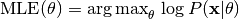
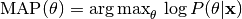

User guide¶
This user guide contains information about getting started with pyAnno, running simulations and running model estimation.
pyAnno can be used as a Python library from within your Python code, or as a standalone application by executing the pyAnno GUI.
Using the library from the pyAnno GUI¶
Starting the GUI¶
If you installed pyAnno using the EPD Free binary installers, you will find a pyAnno icon in your Start menu and on the Desktop (on Windows), or in the Applications folder (on Mac).
In all cases, you can start the GUI from a terminal, with the command:
$ pyanno-ui
Navigating the main window¶
This is the main window of the pyAnno GUI:

It contains three panels:
On the left side we find the model panel. At the top, there are controls to create a new model. Select the desired model from the selection box, and click on “Create...” to enter the basic parameters for the model, for example:

Just below, we find a summary of the model information, and a graphical display of the current model parameters:

On the right side we find the annotations panel. Open an annotations data file or create an empty annotation set from the file dialog at the top:

Once opened, the panel shows some basic information about the annotations:

Finally, the bottommost part of the panel displays standard statistics of annotators agreement and covariance:

At the bottom we can see the actions panel. If the current model and annotations are compatible (e.g., they have the same number of annotators, the panel will show the log likelihood of the data under the model given the current parameters, and wil also offer a number of actions:

From left to right, the buttons allow to estimate parameters by maximum likelihood (“ML estimate...”), or by maximum a posteriori estimate (“MAP estimate...”).
The third button allows to draw a number of samples from the posterior distribution of the accuracy parameters, which represent the correctness of the annotators.

After sampling, the model panel will show credible intervals around the parameters.

The last button, “Estimate labels...” computes the posterior probability of the “true” labels underlying the observed data, and show it as a plot in a separate window:

You can left-click and drag on the plot to examine all the data.
Plot tools¶
All plots on the main window offer these tools:
- To save a plot as displayed in the window, click on the plot and press Ctrl-S (Cmd-S on Mac). A dialog will open, asking for a destination file and the resolution of the saved image (in dpi).
- It is possible to copy the data underlying the plots by pressing Ctrl-C (Cmd-C on Mac). The data is copied on the clipboard as a Python string, which can be copied in a text file, or in a Python shell to further analyze it. For most plots, the copied data will be a numpy array. Make sure to type from numpy import array in your Python shell so that Python can create an array object when you paste the string.
The database window¶
In the bottom right part of the window there are two additional buttons that can be used to interact with the results database:

Clicking on “Open database” opens a new window showing the current contents of the database:

Each row of the table shows a pyAnno result: for each annotations set (first column), one can examine the models that have been applied to it (second column), sorted by decreasing log likelihood (third column).
To save the current results in the database, press “Add to database”. Vice versa, to load old results in the main window, select the corresponding row in the database window, and click on “Load results”.
Using the library from Python¶
General organization of pyAnno¶
The pyAnno library is composed of several modules:
- pyanno.models defines a number of models for the annotation process
- pyanno.annotations offers a AnnotationsContainer object to load annotation files
- pyanno.measures contains a number of statistical functions to measure aggreement and covariance between annotators
- pyanno.plots defines functions to give a graphical representations of annotations and model parameters
- pyanno.database defines a PyannoDatabase object that can be used to store and retrieve the result of applying models to annotations
- pyanno.ui contains the definition of the pyAnno GUI, which is used by the pyAnno application and is typically not used directly from Python
Annotations¶
In pyAnno, annotations are two-dimensional arrays of integers. Rows
correspond to data items, and columns to annotators. Each entry  in an annotation array is the label class assigned by annotator
in an annotation array is the label class assigned by annotator  to
item
to
item  , or pyanno.util.MISSING_VALUE for missing values. If
your data does not match this standard, do not worry: pyAnno offers a
class, AnnotationsContainer
to create annotations in the appropriate format.
, or pyanno.util.MISSING_VALUE for missing values. If
your data does not match this standard, do not worry: pyAnno offers a
class, AnnotationsContainer
to create annotations in the appropriate format.
To create an annotations array from a data file, you can write:
>>> from pyanno.annotations import AnnotationsContainer
>>> anno = AnnotationsContainer.from_file("DATAPATH/testdata_words.txt")
>>> anno.annotations
array([[ 1, 1, 1, ..., -1, -1, -1],
[ 1, 1, 1, ..., -1, -1, -1],
[ 2, 2, 2, ..., -1, -1, -1],
...,
[ 1, 2, -1, ..., -1, -1, 1],
[ 0, 0, -1, ..., -1, -1, 0],
[ 1, 1, -1, ..., -1, -1, 1]])
AnnotationsContainer is able to read text files with annotations separated by whitespaces and/or commas. Labels can be any number or word. Using the missing_values keyword argument one can specify tokens which tokens represent missing values in the data. Default missing values for files are ‘-1’, ‘NA’, ‘None’, and ‘*’.
In the example, the file testdata_words.txt contains the tokens ‘HIGH’, ‘MEDIUM’ and ‘LOW’, and missing values are indicated as ‘NA’:
LOW LOW LOW NA NA NA NA NA
LOW LOW LOW NA NA NA NA NA
MEDIUM MEDIUM MEDIUM NA NA NA NA NA
...
LOW MEDIUM NA NA NA NA NA LOW
HIGH HIGH NA NA NA NA NA HIGH
LOW LOW NA NA NA NA NA LOW
You can interrogate the AnnotationsContainer object about that:
>>> anno.labels
['HIGH', 'LOW', 'MEDIUM']
>>> anno.missing_values
['NA']
To create an annotations array from an existing numerical array:
>>> import numpy as np
>>> # raw annotations created at random
>>> x = np.random.randint(low=3, high=7, size=(10,4))
>>> x
array([[5, 4, 4, 5],
[6, 3, 5, 6],
[5, 3, 4, 4],
[4, 3, 6, 5],
[4, 6, 3, 3],
[4, 3, 4, 6],
[4, 3, 5, 5],
[4, 4, 4, 3],
[4, 4, 6, 4],
[6, 6, 5, 5]])
>>> anno = AnnotationsContainer.from_array(x, missing_values=[3])
>>> anno.annotations
array([[ 1, 0, 0, 1],
[ 2, -1, 1, 2],
[ 1, -1, 0, 0],
[ 0, -1, 2, 1],
[ 0, 2, -1, -1],
[ 0, -1, 0, 2],
[ 0, -1, 1, 1],
[ 0, 0, 0, -1],
[ 0, 0, 2, 0],
[ 2, 2, 1, 1]])
>>> anno.labels
[4, 5, 6]
>>> anno.missing_values
[3]
In this example, we arbitrarily defined the value 3 to represent missing missing values. For arrays, the default missing values are -1, numpy.nan, and None.
For use in the rest of the library, you may use the annotations property whenever an annotation array is needed, e.g.:
>>> from pyanno.models import ModelBt
>>> # create a new model with 3 label classes, 4 annotators
>>> model = ModelBt.create_initial_state(3, 4)
>>> model.mle(anno.annotations)
Models¶
pyAnno defines an implementation of several models, which can be found in the namespace pyanno.models. At the moment, there are four available classes, ModelA, ModelB, ModelBt, and ModelBtLoopDesign.
All models offer a common set of methods, which we will describe in the following (see AbstractModel).
Creating a new model¶
All models define a method create_initial_state, which is the most common way to create a model, in that one only specifies basic parameters, like the number of label classes and annotators, and other internal parameters are initialized at random:
>>> from pyanno.models import ModelA
>>> # create a new instance of model A, with 5 label classes
>>> model = ModelA.create_initial_state(5)
>>> # other model parameters are initialized from the model prior
>>> model.theta
array([ 0.83840633, 0.8484543 , 0.64425106, 0.82917001, 0.62370467,
0.68990019, 0.83898436, 0.60759938])
Estimating parameters¶
Model parameters can be estimated from data using maximum likelihood estimation (MLE):

or maximum a posteriori (MAP) estimation:

The corresponding methods of the model object are called mle() and map().
For example:
>>> from pyanno.annotations import AnnotationsContainer
>>> # load some test data
>>> anno = AnnotationsContainer.from_file("DATAPATH/testdata_words.txt")
>>> from pyanno.models import ModelB
>>> # create an instance of model B, with 4 label classes and 8 annotators
>>> model = ModelB.create_initial_state(4, 8)
>>> # model.pi contains the prior probability of each label class
>>> # these are the initial values (they actual values will vary, since
>>> # they are chosen at random
>>> print model.pi
[ 0.20491305 0.54925142 0.10808026 0.13775528]
>>> # estimate the parameters from the observed data using MAP
>>> model.map(anno.annotations)
>>> # the last parameters is very close to zero, since the annotations
>>> # only contain 3 observed label classes
>>> print model.pi
[ 1.52012196e-01 6.35840218e-01 2.12147586e-01 3.92595587e-44]
The models also have a method to compute the log likelihood of data given the current estimate of the parameters, log_likelihood():
>>> # create an instance of model B, with 4 label classes and 8 annotators
>>> model = ModelB.create_initial_state(4, 8)
>>> # log likelihood of the model before parameters optimization
>>> model.log_likelihood(anno.annotations)
-3371.9552260166579
>>> # estimate the parameters from the observed data using MAP
>>> model.map(anno.annotations)
>>> # after optimization, the log likelihood has improved
>>> model.log_likelihood(anno.annotations)
-1698.1356816301102
Computing the posterior distribution over label classes¶
After the model parameters have been estimated, one can compute the posterior distribution over the “true” label classes using the infer_labels():
>>> # load annotations
>>> from pyanno.annotations import AnnotationsContainer
>>> anno = AnnotationsContainer.from_file("data/testdata_words.txt")
>>> # create and fit model
>>> from pyanno.models import ModelBt
>>> model = ModelBt.create_initial_state(3, 8)
>>> model.map(anno.annotations)
>>> # compute the posterior distribution over true annotations
>>> posterior = model.infer_labels(anno.annotations)
>>> # each row show the probability of each label class for the
>>> # corresponding item
>>> print posterior
[[ 6.11296106e-05 9.99845391e-01 9.34796369e-05]
[ 6.11296106e-05 9.99845391e-01 9.34796369e-05]
[ 1.72435609e-04 7.44387155e-04 9.99083177e-01]
...,
[ 8.98559709e-04 9.75743127e-01 2.33583134e-02]
[ 9.98634702e-01 1.00816769e-03 3.57129927e-04]
[ 5.41655039e-05 9.99863004e-01 8.28300980e-05]]
Computing the posterior distribution over accuracy¶
Each of the models has a set of parameters that correspond to the accuracy of annotators, i.e., their likelihood of reporting correct annotations. The MLE and MAP estimators compute a point estimate of this parameters, but in order to draw conclusions about them, one may wish to know how robust these estimates are, i.e., one would rather have a full probability distribution over these parameters given the data.
(A note: the posterior distribution can be used to obtain a *credible interval*, i.e., the parameters will belong to the interval with a certain probability given the observed data. This is different – and often more meaningful – than a *confidence interval* , which gives the range of parameters that one would get from hypothetical repeated experiments.)
pyAnno models have a method called sample_posterior_over_accuracy() that allow to draw a number of samples from this posterior distribution.
>>> from pyanno.annotations import AnnotationsContainer
>>> # load some test data
>>> anno = AnnotationsContainer.from_file("data/testdata_words.txt")
>>> from pyanno.models import ModelBt
>>> # create an instance of model Bt, with 3 label classes and 8 annotators
>>> model = ModelBt.create_initial_state(3, 8)
>>> # estimate the parameters from the observed data using MAP
>>> model.map(anno.annotations)
>>> # draw 200 samples from the posterior of the accuracy
>>> # parameters (theta). The first 100 samples (burn_in_samples) are
>>> # discarded, to allow the sampler to converge, and we only keep
>>> # one in 3 samples (thin_samples), in order to increase the
>>> # between successive samples independence
>>> samples = model.sample_posterior_over_accuracy(anno.annotations, 200,
... burn_in_samples=100, thin_samples=3)
>>> # we can then compute a credible interval for the parameters:
>>> samples.mean(axis=0)
array([ 0.93827498, 0.89468126, 0.81692565, 0.89159128, 0.90249765,
0.88407621, 0.83279993, 0.83576043])
>>> samples.std(axis=0)
array([ 0.01091991, 0.01805782, 0.02169594, 0.01670348, 0.01989191,
0.01498183, 0.02385009, 0.01775805])
More model methods¶
It is possible to generate random annotations from a model using the generate_annotations() method:
>>> from pyanno.models import ModelBt >>> # create a new model Bt; the accuracy parameters of the model are set >>> # such that the first two annotators are extremely reliable, while >>> # the third one annotators responds at random >>> model = ModelBt.create_initial_state(4, 3, theta=[0.99,0.99,0.25]) >>> # the randomly generated annotations reflect that: the first two >>> # annotators respond in an identical way, while the third guesses >>> model.generate_annotations(10) array([[1, 1, 1], [1, 1, 2], [3, 3, 1], [0, 0, 2], [0, 0, 2], [0, 0, 3], [3, 3, 3], [2, 2, 0], [1, 1, 3], [1, 1, 1]])
The method are_annotations_compatible() verifies that a given annotations set is compatible with a model instance:
>>> from pyanno.annotations import AnnotationsContainer >>> # the loaded annotations have 8 columns, i.e., 8 annotators >>> anno = AnnotationsContainer.from_file("DATAPATH/testdata_words.txt") >>> from pyanno.models import ModelB >>> # a model with just 2 annotators is not compatible with the data >>> model = ModelB.create_initial_state(4, 2) >>> model.are_annotations_compatible(anno.annotations) False >>> # with 8 annotators, the model is compatible >>> model = ModelB.create_initial_state(4, 8) >>> model.are_annotations_compatible(anno.annotations) True
Annotation statistics¶
Standard annotations statistics to measure annotators agreement and covariance are available in the pyanno.measures package.
Some statistical measures are only defined for pairs of annotators. The pyanno.measures package defines a function, pairwise_matrix(), which, given a set of annotations, returns a matrix with the statistics evaluated for all pairs of annotators:
>>> from pyanno.annotations import AnnotationsContainer
>>> anno = AnnotationsContainer.from_file("data/testdata_words.txt")
>>> # keep only the annotations for the first 4 annotators to make the
>>> # example more readable
>>> annotations = anno.annotations[:,:4]
>>> from pyanno.measures import cohens_kappa, pairwise_matrix
>>> # compute Cohen's kappa for the first 2 annotators
>>> cohens_kappa(annotations[:,0], annotations[:,1])
0.7018473770364021
>>> # compute Cohen's kappa for all pairs of annotators
>>> # some entries are 'nan' because the annotators annotated different
>>> # sets of items
>>> print pairwise_matrix(cohens_kappa, annotations)
[[ 1. 0.70184738 0.58818707 nan]
[ 0.70184738 1. 0.6173614 0.57329119]
[ 0.58818707 0.6173614 1. 0.50605635]
[ nan 0.57329119 0.50605635 1. ]]
Plots¶
The plots displayed in the pyAnno GUI are also available in the module pyanno.plots, to be displayed separately from Python code or from a Python shell.
To be able to use them correctly, you should remember to set the environment variable ETS_TOOLKIT=’wx’, and start the IPython shell with the option ‘–gui=wx’.